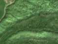
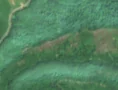

2,9 ha de pădure schimbată lângă Parva
Între vara lui 2025 și 4 mai 2026, pe aproximativ 2,9 ha de pădure din comuna Parva, județul Bistrița-Năsăud, imaginile Sentinel-2 arată că vegetația a dispărut sau s-a schimbat puternic. În registrul public există o autorizație de tăiere pentru acest loc.
Autorizația de tăiere
probabil cu autorizație
Am găsit o autorizație de tăiere pentru locul ăsta, dar registrul nu ne lasă să confirmăm că acoperă exact tăierea pe care o vedem.
Ce se vede în poze: În poza «după», în zona marcată apar fâșii de pământ gol, brun-roz, în mijlocul pădurii care rămâne verde, iar în «înainte» zona era acoperită de vegetație. Poza detaliată din 2020 arată însă și porțiuni mai deschise, cu iarbă și arbori răzleți, așa că nu este sigur că era pădure deasă peste tot.


Înainte și după: Copernicus Sentinel-2, 10 m pe pixel, conturul zonei cu portocaliu. Poza detaliată (Esri World Imagery) e de acum 1–4 ani: arată ce era acolo înainte, nu tăierea.
Pe scurt
- Identificator
- 20260504_47409_24568
- Locul
- comuna Parva, județul Bistrița-Năsăud (SIRUTA 34155)
- Coordonate (centru)
- 47.40859, 24.56844 · Google Maps · OpenStreetMap
- Suprafața
- 2,9 ha (din pixeli de 10 m; ± câțiva pixeli pe margine)
- Pădurea întreagă
- în vara lui 2025 (de atunci, nori sau iarnă)
- Prima imagine cu schimbarea
- 4 mai 2026
- Imagini în care se vede schimbarea
- 10
- Cât de sigur e semnalul din satelit
- scăzută
- Autorizația cea mai apropiată
- APV 2400116001560 · Regia Autonomă Ocolul Silvic Izvorul Someșului Mare R.A., la 80 m de zonă
- Terenul
- în afara amenajamentelor silvice publicate (pășune, mal de apă sau pădure privată fără amenajament în registru)
- Pădure pierdută în jur, alți ani
- 2004, 2015, 2016 (Hansen)
- Chiar lângă
- o altă schimbare, văzută pe 7 aprilie 2026: pagina ei
- Garda Forestieră
- Cluj
Dacă vrei să verifici sau să sesizezi
- Pădurile din județul Bistrița-Năsăud sunt în grija Gărzii Forestiere Cluj, care controlează tăierile și dă amenzile.
- Autorizația găsită în zonă e emisă de Regia Autonomă Ocolul Silvic Izvorul Someșului Mare R.A..
- Formularul Gărzii Forestiere Naționale primește sesizări și fără nume. Trimite linkul acestei pagini, coordonatele și pozele. Dacă tăierea e în desfășurare, sună la 112.
- Autorizațiile și transporturile de lemn se pot căuta în Inspectorul Pădurii.
Pagina arată ce se vede din satelit și ce scrie în registrul public; nu e o dovadă în sine.
Cum citezi zona
Linkul acestei pagini nu se schimbă. Dacă zona iese vreodată de pe hartă, pagina rămâne, cu data și cu ce știam despre ea.
Pădurea RO, zona 20260504_47409_24568: 2,9 ha, comuna Parva, județul Bistrița-Năsăud; schimbare văzută din satelit între vara lui 2025 și 4 mai 2026. https://iliemihai.github.io/padurea-ro/zona/20260504_47409_24568/ (consultat la [data]). Date: CC BY 4.0.
Datele zonei: GeoJSON · toate zonele: date deschise · licența CC BY 4.0.
Istoricul zonei pe hartă
Starea se poate schimba când registrul publică o autorizație sau când analistul vede poze mai bune. O ținem aici, ca un link citat să arate și ce spuneam atunci.
Pe hartă cel târziu din 5 noiembrie 2026.
- 5 noiembrie 2026 – azi · probabil cu autorizație
Detalii tehnice, pentru verificare
De ce acest nivel de încredere:
- văzută schimbată în 10 imagini diferite
- ultima dată am văzut-o intactă în vara lui 2025 (de atunci, nori sau zăpadă)
- fără părerea AI
Ce a văzut analistul cu context: În imaginea Sentinel-2 din 2026-06-29 apar pete brun-rozii alungite pe diagonală în contur și o pată mare chiar la est, pe când pădurea din jur rămâne verde, deci nu este efect de sezon (iunie) sau de lumină. Poza detaliată din 2020 arată un mozaic de coroane și petice de iarbă, iar apropierea de o zonă cu poieni și lipsa unei benzi continue care să sugereze drum reduc certitudinea. Datele (WorldCover 100% copaci, coronament 93% în 2000, 2,9 ha schimbate) susțin o tăiere, dar autorizația APV este la 80 m, fără suprapunere, deci nu confirmă și nu infirmă.
- Placa Sentinel-2
- 35TLN
- NDVI de referință
- 0.81
- NBR de referință
- 0.55
- Scăderea în pădurea din jur
- 0.06
- Persistență
- 0.87
- NDVI / NBR după
- 0.405 / -0.061
- Analistul cu context (model)
- taiere_rasa · 0.5
Cum se calculează fiecare: metodologia.
Pune harta zonei într-un articol
Copiază codul în articol (merge în majoritatea site-urilor de știri). Sau pune doar linkul: WhatsApp, Facebook și X arată singure poza zonei.